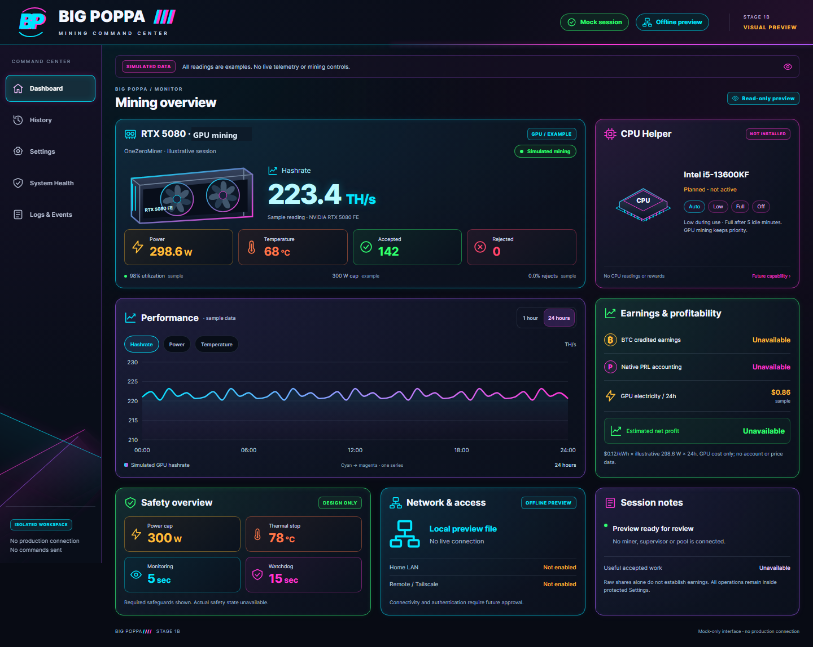
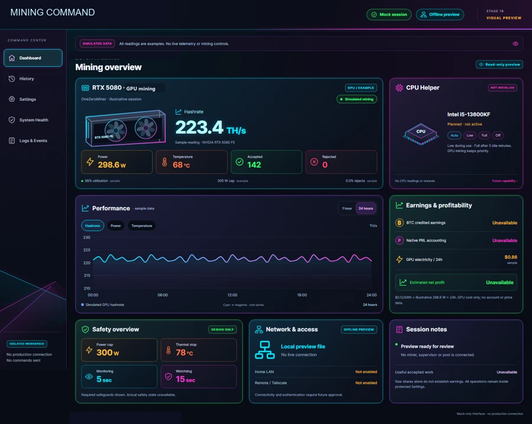
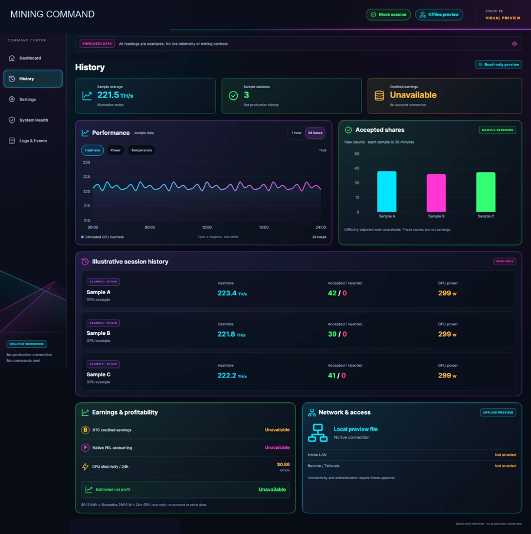
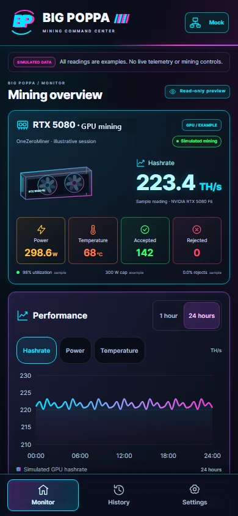

Know what a reading means
Hashrate, temperature, GPU utilization and power need units, source times and explicit unavailable states. A stopped miner can leave historical readings behind.
01 / OBSERVABILITY / AUTOMATION
A mining rig becomes a system. A custom environment for understanding GPU performance, monitoring a mining workload and keeping operational authority deliberate.

CURRENT CHECKPOINT · Approved Stage 1B interface. Later read-only telemetry is documented; persistent V2 controls remain unfinished.
THE PURPOSE
More than a hashrate counter: telemetry, workload ownership, bounded execution and independent stop evidence belong to different parts of the system.
Hashrate, temperature, GPU utilization and power need units, source times and explicit unavailable states. A stopped miner can leave historical readings behind.
The existing supervisor owns the authorized workload and safety decisions. The dashboard’s simulated unlock and buttons do not establish production control.
A recorded, attended 15-minute validation reported 212.5 TH/s mean throughput and confirmed shutdown and power-limit restoration. It is a historical trial, not a current performance guarantee.
HOW IT FITS TOGETHER
A simplified architecture: responsibilities, not private infrastructure or deployment instructions.
Work and observations
Workload ownership + safeguards
Selected, timestamped telemetry
Status, trends + review
The diagram describes source-backed responsibilities. It does not establish that every path is deployed or physically validated.
THE ENGINEERING CHALLENGE
A test boundary is part of the engineering.
A recorder-admission correction exposed a native process-layout assumption that synthetic tests had missed. The recorded solution added a runtime self-check and independent comparison. A separate later stop-classification issue remained unresolved; one correction is not proof that every failure mode is closed.
Optimization starts with an attributable baseline. The record supports a bounded GPU trial and measured power/thermal behavior. It does not support a claimed efficiency uplift, net profit or production CPU-mining capability.
VISUAL TOUR
Images are clearly scoped. Open a screenshot to inspect the original-derived, full-resolution copy.

Simulated Stage 1B values; original workload label generalized.
ENLARGE ORIGINAL-DERIVED IMAGE ↗
Approved sample sessions and trends, not a production ledger.
ENLARGE ORIGINAL-DERIVED IMAGE ↗
Approved phone layout with fictional telemetry.
ENLARGE ORIGINAL-DERIVED IMAGE ↗STATUS, WITHOUT THE SPIN
| Recorded validation | Historical attended mining trial with independent stop and restoration evidence. |
|---|---|
| Implemented | Approved visual UI and later read-only telemetry checkpoints. |
| Pending | Persistent V2 runtime and authenticated remote controls. |
| Unverified | Current production health, optimization uplift and attributable profit. |
Based on reviewed source and dated implementation records. This portfolio website does not run the application or certify current production state.
THE TAKEAWAY
Reviewed PDF project summaries are publicly available. The underlying mining, trading and fitness applications remain separately managed and are not distributed through this website.
One-page introduction to GPU monitoring and mining safety.
Download PDF · 0.1 MBSix-page illustrated product and engineering introduction.
Download PDF · 0.3 MB